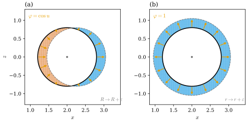
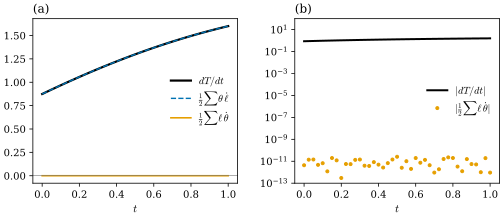

41.2 Volume, Area, and Mean Curvature Gradients
Goals
- 닫힌 smooth surface의 부피, 넓이, total mean curvature, total Gaussian curvature의 first variation을 이 study set의 부호로 유도하고, sphere와 torus로 확인할 수 있다.
- mesh가 enclosed volume이 기준점에 무관함을 보이고, 그 gradient가 barycentric vector area라는 것을 증명할 수 있다.
- 넓이의 gradient가 \(-(L\mathbf{x})_i\)임을 증명하고, Crane의 노트와 부호가 다른 곳을 설명할 수 있다.
- Schläfli formula를 증명하고, 그것으로 total mean curvature의 gradient가 Gauss curvature normal임을 보일 수 있다.
Prerequisites
- Section 41.1: Proposition 41.1.3, Proposition 41.1.4, Proposition 41.1.8, 이 장의 기호(Section 41.1의 Conventions 상자).
- Chapter 40: 세 curvature normal Proposition 40.3.1, Definition 40.3.3, Theorem 40.3.4, Definition 40.3.9, Theorem 40.3.10. discrete mean curvature Definition 40.4.14, Steiner formula Theorem 40.4.10, discrete Gauss–Bonnet Theorem 40.2.1, Corollary 40.2.5.
- Chapter 38: barycentric discrete vector area Proposition 38.5.5. Chapter 36: cotan Laplacian Definition 36.6.6.
- Chapter 35: vector-valued form의 wedge Proposition 35.5.13, Proposition 35.5.16, divergence theorem Proposition 35.4.12(c). Chapter 39: Gauss–Bonnet theorem(Section 39.4).
Motivation
Section 41.1은 triangle 하나의 넓이, 각, hinge 하나의 bending angle을 미분했다. 이제 그것들을 mesh 전체에서 더한다. 무엇을 더할지는 Chapter 40이 이미 정해 두었다. convex polyhedron을 \(\varepsilon\)만큼 부풀린 부피는
\[ V + \varepsilon A + \frac{\varepsilon^2}{2}\sum_{ij}\ell_{ij}\theta_{ij} + \frac{\varepsilon^3}{3}\sum_i\delta_i \]
였다(Theorem 40.4.10). 이 네 coefficient, 곧 부피, 넓이, total mean curvature(부호를 바꾼 것), total angle defect를 vertex 위치로 미분하면 무엇이 나오는가? 이 절의 답은 “한 단계 위의 curvature normal”이다. 부피의 gradient는 vector area, 넓이의 gradient는 mean curvature normal, \(\tfrac12\sum\ell_{ij}\theta_{ij}\)의 gradient는 Gauss curvature normal이고, total angle defect의 gradient는 \(0\)이다. 같은 사슬이 smooth surface에도 있으므로 smooth부터 계산한다.
First Variations of a Closed Surface
이 소절의 surface \(S\)는 compact하고 boundary가 없는 oriented surface를 immersion \(\mathbf{x}\)로 \(\R^3\)에 놓은 것이다(여러 parametrization 조각으로 덮는다). \(\mathbf{N}\)은 orientation이 정하는 unit normal이고, \(S\)가 영역 \(\Omega\)를 둘러싸면 바깥쪽이다. variation(변분)은 \(\mathbf{x}_0 = \mathbf{x}\)인 immersion들의 smooth family \(\mathbf{x}_t\)이고, \(\eta = \partial_t\mathbf{x}_t|_{t=0}\)를 variation field라 한다. \(\eta = \varphi\mathbf{N}\)인 것을 normal variation이라 부른다. enclosed volume은 divergence theorem(Proposition 35.4.12(c), \(\divg\mathbf{x} = 3\))에서 \(V = \tfrac13\int_S\inner{\mathbf{x}}{\mathbf{N}}\,dA\)이다. 둘러싸지 않는 immersion에서도 이 식으로 \(V\)를 정한다.
Proposition 41.2.1 (first variations). 위의 \(S\)와 variation \(\mathbf{x}_t\)에 대하여 \(t = 0\)에서
이다. 첫 식과 마지막 식은 모든 variation에서, 가운데 두 식은 normal variation \(\eta = \varphi\mathbf{N}\)에서 성립한다. 곧 \(L^2\) inner product \(\int\inner{\cdot}{\cdot}\,dA\)에 대한 네 양의 gradient는 차례로 \(\mathbf{N}\), \(-2H\mathbf{N}\), \(-K\mathbf{N}\), \(0\)이다.
Proof idea: 네 양을 모두 \(d\mathbf{x}\)와 \(\mathbf{N}\)의 wedge로 쓴다(Proposition 40.3.1). \(t\)로 미분하면 \(\dot{\mathbf{N}} \perp \mathbf{N}\)인 항이 사라지고, 남는 항 가운데 하나는 exact form이라 닫힌 surface에서 적분이 \(0\)이다.
Derivation. \(\dot{\mathbf{N}} = \partial_t\mathbf{N}_t|_{t=0}\)라 쓰자. \(\abs{\mathbf{N}_t} = 1\)이므로 \(\dot{\mathbf{N}} \perp \mathbf{N}\), 곧 \(\dot{\mathbf{N}}\)은 tangent다. 0-form \(\mathbf{v}\)와 1-form \(d\mathbf{x}\)의 cross product wedge를 \((\mathbf{v}\wedge d\mathbf{x})(X) = \mathbf{v}\times d\mathbf{x}(X)\)로 쓴다. 아래에서 여러 번 쓰는 사실은 이것이다. \(\mathbf{v}\)가 tangent이면 \(\mathbf{v}\wedge d\mathbf{x}\)의 값은 \(\mathbf{N}\)에 평행하다.
부피. \(\tfrac12d\mathbf{x}\wedge d\mathbf{x} = \mathbf{N}\,dA\)이므로 \(V = \tfrac16\int\inner{\mathbf{x}}{d\mathbf{x}\wedge d\mathbf{x}}\)이다. \(t\)로 미분하고 \(d\mathbf{x}\wedge d\eta = d\eta\wedge d\mathbf{x}\)(Proposition 35.5.13)를 쓰면
\[ \tfrac{d}{dt}V = \tfrac16\int\inner{\eta}{d\mathbf{x}\wedge d\mathbf{x}} + \tfrac13\int\inner{\mathbf{x}}{d\mathbf{x}\wedge d\eta} \]
이다. 첫 항은 \(\tfrac13\int\inner{\eta}{\mathbf{N}}\,dA\)이다. 둘째 항에서 \(d\mathbf{x}\wedge d\eta = d(\eta\wedge d\mathbf{x})\)이고(Proposition 35.5.16(b), (c)), 같은 명제의 product rule로
\[ \inner{\mathbf{x}}{d(\eta\wedge d\mathbf{x})} = d\inner{\mathbf{x}}{\eta\wedge d\mathbf{x}} - \langle d\mathbf{x}\wedge(\eta\wedge d\mathbf{x})\rangle \]
이다. 첫 항은 exact라 닫힌 \(S\) 위의 적분이 \(0\)이다(Exercise 40.3.4(b)와 같은 논증). 둘째 항은 orthonormal basis \(e_1, e_2\)(\(a = d\mathbf{x}(e_1)\), \(b = d\mathbf{x}(e_2)\), \(a\times b = \mathbf{N}\))에서 \(\inner{a}{\eta\times b} - \inner{b}{\eta\times a} = -2\inner{\eta}{\mathbf{N}}\)이다. 그래서 둘째 항은 \(\tfrac13\cdot2\int\inner{\eta}{\mathbf{N}}\,dA\)이고, 더하면 첫 식이다.
넓이. \(A(t) = \int\inner{\mathbf{N}_t}{\tfrac12d\mathbf{x}_t\wedge d\mathbf{x}_t}\)를 미분하면 \(\int\inner{\dot{\mathbf{N}}}{\mathbf{N}}\,dA + \int\inner{\mathbf{N}}{d\mathbf{x}\wedge d\eta}\)이고 앞의 것은 \(0\)이다. \(\eta = \varphi\mathbf{N}\)이면 \(d\eta = \mathbf{N}\,d\varphi + \varphi\,d\mathbf{N}\)이다. \(d\mathbf{x}\wedge(\mathbf{N}\,d\varphi)\)의 값은 \(d\mathbf{x}(X)\times\mathbf{N}\)의 combination이라 tangent이고 \(\mathbf{N}\)과의 inner product가 \(0\)이다. 남는 것은 \(\varphi\inner{\mathbf{N}}{d\mathbf{x}\wedge d\mathbf{N}} = -2H\varphi\,dA\)((40.3.1))이다. (tangential variation \(\eta_T\)는 부피의 경우와 같은 product rule로 \(\inner{\mathbf{N}}{d\mathbf{x}\wedge d\eta_T}\)가 exact form과 \(\langle d\mathbf{N}\wedge(\eta_T\wedge d\mathbf{x})\rangle = 0\)의 차가 되어 기여하지 않는다.)
total mean curvature. (40.3.1)에서 \(\int H\,dA = -\tfrac12\int\inner{\mathbf{N}}{d\mathbf{x}\wedge d\mathbf{N}}\)이다. 미분하면 세 항이 나온다.
\[ \begin{aligned} \tfrac{d}{dt}\int H\,dA = -\tfrac12\int\Big(&\inner{\dot{\mathbf{N}}}{d\mathbf{x}\wedge d\mathbf{N}} + \inner{\mathbf{N}}{d\eta\wedge d\mathbf{N}} \\ &+ \inner{\mathbf{N}}{d\mathbf{x}\wedge d\dot{\mathbf{N}}}\Big) \end{aligned} \]
첫 항은 \(d\mathbf{x}\wedge d\mathbf{N} = -2H\mathbf{N}\,dA\)가 normal이고 \(\dot{\mathbf{N}}\)이 tangent라 \(0\)이다. 둘째 항은 \(\eta = \varphi\mathbf{N}\)에서 \((\mathbf{N}\,d\varphi)\wedge d\mathbf{N}\)의 값이 tangent라 빠지고 \(\varphi\inner{\mathbf{N}}{d\mathbf{N}\wedge d\mathbf{N}} = 2K\varphi\,dA\)가 남는다. 셋째 항은 \(d\mathbf{x}\wedge d\dot{\mathbf{N}} = d(\dot{\mathbf{N}}\wedge d\mathbf{x})\)이고, product rule로 \(\inner{\mathbf{N}}{d(\dot{\mathbf{N}}\wedge d\mathbf{x})}\)는 exact form \(d\inner{\mathbf{N}}{\dot{\mathbf{N}}\wedge d\mathbf{x}}\)에서 \(\langle d\mathbf{N}\wedge(\dot{\mathbf{N}}\wedge d\mathbf{x})\rangle\)를 뺀 것이다. \(\dot{\mathbf{N}}\wedge d\mathbf{x}\)의 값은 normal이고 \(d\mathbf{N}\)의 값은 tangent라 뒤의 것은 \(0\)이다. 그래서 셋째 항의 적분은 \(0\)이고, 남는 것은 \(-\tfrac12\int2K\varphi\,dA\)이다.
total Gaussian curvature. Gauss–Bonnet theorem(Section 39.4)에서 \(\int K\,dA = 2\pi\chi(S)\)이고, \(\chi\)는 variation 동안 바뀌지 않는다.
gradient가 vector field라는 점에 주의하자. \(\varphi \gt 0\)인 곳에서 surface를 \(\mathbf{N}\) 쪽으로 밀면 부피는 늘고, 넓이는 \(-2H\varphi\)의 적분만큼 변한다. 바깥쪽 normal의 sphere에서 \(H = -1/r \lt 0\)이므로 \(-2H\mathbf{N}\)은 바깥쪽을 향한다. 부풀리면 넓이가 는다는 상식과 맞는다. Tour는 넓이의 변화율 공식을 증명 없이 썼고((0.4.3) 뒤), Chapter 32는 그 curve판인 길이의 first variation을 증명했다(Proposition 32.2.3).
Example 41.2.2 (sphere and torus). (a) 반지름 \(r\)인 sphere(바깥쪽 \(\mathbf{N}\), \(H = -1/r\), \(K = 1/r^2\))에서 \(r\)을 늘리는 variation은 \(\varphi = 1\)이다. \(\tfrac{d}{dr}\tfrac43\pi r^3 = 4\pi r^2 = \int dA\), \(\tfrac{d}{dr}4\pi r^2 = 8\pi r = -\int2H\,dA\), \(\tfrac{d}{dr}(-4\pi r) = -4\pi = -\int K\,dA\)이다. (b) torus \(T_{R,r}\)(running example의 parametrization, 바깥쪽 \(\mathbf{N} = (\cos u\cos v, \cos u\sin v, \sin u)\))에서는 \(V = 2\pi^2Rr^2\), \(A = 4\pi^2Rr\), \(\int H\,dA = -2\pi^2R\)이다. \(R\)을 늘리는 variation은 \(\partial\mathbf{x}/\partial R = (\cos v, \sin v, 0)\)이고 normal 성분은 \(\varphi = \cos u\)다. 이것은 normal variation이 아니지만, tangential 성분은 1차까지 surface를 그 위에서 미끄러뜨릴 뿐이라 넓이와 \(\int H\,dA\)를 바꾸지 않는다(넓이는 위의 유도에서 보였고, \(\int H\,dA\)는 이 사실을 받아들인다. Exercise 41.2.5의 풀이도 같다). 그래서 \(\varphi\)만 넣으면 된다. \(dA = r(R + r\cos u)\,du\,dv\)로 적분하면
\[ \begin{aligned} \int\cos u\,dA &= 2\pi^2r^2 = \tfrac{\partial V}{\partial R}, \\ -\int2H\cos u\,dA &= 4\pi^2r = \tfrac{\partial A}{\partial R}, \\ -\int K\cos u\,dA &= -2\pi^2 = \tfrac{\partial}{\partial R}\int H\,dA \end{aligned} \]
이다(\((R, r) = (2, 0.8)\)에서 \(12.633\), \(31.583\), \(-19.739\)). \(r\)을 늘리는 variation은 \(\partial\mathbf{x}/\partial r = \mathbf{N}\), 곧 \(\varphi = 1\)이고 \(4\pi^2Rr\), \(4\pi^2R\), \(0\)이 나온다(\(\int K\,dA = 0\)). \(V = \pi r^2\cdot2\pi R\)과 \(A = 2\pi r\cdot2\pi R\)은 Pappus의 공식이다. cross-section의 넓이와 둘레에 중심원의 길이를 곱한 것이다.
Verification: verify/v-41-2-gradients.py
Figure 41.2.1은 이 두 variation을 meridian 평면에서 본 것이다. torus는 이 원을 \(z\)축 둘레로 돌린 것이다. 왼쪽 (a)에서 원 전체가 오른쪽으로 \(\varepsilon\)만큼 옮겨 간다(회색 점선). 주황 화살표는 variation field의 normal 성분 \(\varphi\mathbf{N} = \cos u\,\mathbf{N}\)이다. 바깥쪽 절반에서는 바깥으로, 안쪽 절반에서는 안으로 향하고, 꼭대기와 바닥(\(u = \pm\tfrac\pi2\))에서는 \(0\)이다. 하늘색 초승달이 새로 얻은 부분, 연한 주홍 초승달이 잃은 부분이다. 둘은 cross-section에서 넓이가 같지만, 하늘색 쪽이 \(z\)축에서 더 멀어 돌릴 때 더 큰 부피를 쓸고 지나간다. 그래서 부피가 \(2\pi^2r^2\varepsilon\)만큼 는다. 오른쪽 (b)에서는 모든 점이 바깥으로 같은 속력으로 움직인다(\(\varphi = 1\)).

The Volume Gradient
mesh에서는 부피부터 정한다. smooth의 \(V = \tfrac13\int\inner{\mathbf{x}}{\mathbf{N}}\,dA\)를 face마다 계산하면 된다. face \(f\) 위에서 \(\inner{\mathbf{x}}{\mathbf{N}_f}\)는 상수 \(\inner{\mathbf{x}_i}{\mathbf{N}_f}\)이므로 face의 몫은 \(\tfrac13A_f\inner{\mathbf{x}_i}{\mathbf{N}_f} = \tfrac16\inner{\mathbf{x}_i}{(\mathbf{x}_j - \mathbf{x}_i)\times(\mathbf{x}_k - \mathbf{x}_i)}\)이고, 이것은 원점과 face로 만든 tetrahedron의 signed volume다(dgmesh.signed_volume).
Proposition 41.2.3 (the enclosed volume of a mesh). 닫힌 oriented simplicial surface 위의 discrete immersion \(\mathbf{x}\)와 점 \(\mathbf{q} \in \R^3\)에 대하여
는 \(\mathbf{q}\)에 무관하다. 이 값을 mesh의 enclosed volume(둘러싼 부피) \(V(\mathbf{x})\)라 한다. mesh가 embedded이고 face가 바깥쪽을 향하면 \(V(\mathbf{x})\)는 둘러싸인 영역의 부피다.
Proof. determinant의 multilinearity로 전개하면 \(\mathbf{q}\)가 두 번 이상 들어간 항은 \(0\)이고
\[ \begin{aligned} \det[\mathbf{x}_i - \mathbf{q}, \dots] &= \det[\mathbf{x}_i, \mathbf{x}_j, \mathbf{x}_k] \\ &\quad - \inner{\mathbf{q}}{\mathbf{x}_i\times\mathbf{x}_j + \mathbf{x}_j\times\mathbf{x}_k + \mathbf{x}_k\times\mathbf{x}_i} \end{aligned} \]
이다. 괄호 안은 \(2A_f\mathbf{N}_f\)이므로((38.5.2)) \(V_{\mathbf{q}} = V_0 - \tfrac13\inner{\mathbf{q}}{\sum_fA_f\mathbf{N}_f}\)이고, 닫힌 mesh에서 \(\sum_fA_f\mathbf{N}_f = 0\)이다(Proposition 38.5.5(c)). 마지막 문장: face \(f\) 위에서 \(\inner{\mathbf{x} - \mathbf{q}}{\mathbf{N}_f}\)가 상수이므로 \(\tfrac13\int_f\inner{\mathbf{x} - \mathbf{q}}{\mathbf{N}}\,dA\)는 \(\tfrac13A_f\inner{\mathbf{x}_i - \mathbf{q}}{\mathbf{N}_f}\)이고, column 연산으로 이것은 (41.2.2)의 \(f\)항이다. 더하면 \(\tfrac13\int\inner{\mathbf{x} - \mathbf{q}}{\mathbf{N}}\,dA\)이고, divergence theorem(Proposition 35.4.12(c), \(\divg(\mathbf{x} - \mathbf{q}) = 3\))에서 이것이 영역의 부피다.
\(\mathbf{q}\)를 어디에 두든 같다는 것은 그림으로도 읽을 수 있다. \(\mathbf{q}\)가 바깥에 있으면 \(\mathbf{q}\)에서 보아 뒤로 향한 face의 tetrahedron이 음의 부피를 가져, 앞쪽 face의 tetrahedron이 영역 밖까지 덮은 몫을 지운다.
Theorem 41.2.4 (the volume gradient). 닫힌 oriented mesh에서 모든 vertex \(i\)에 대하여
이다. 여기서 face는 \(i\)부터 순환시켜 \((i, j, k)\)로 읽고, \(\mathbf{A}_i\)는 barycentric discrete vector area(Proposition 38.5.5)다.
Proof. Proposition 41.2.3에서 \(\mathbf{q} = 0\)으로 두자. \(\mathbf{x}_i\)는 \(i\)를 포함하는 face의 항에만 한 번씩 나오고, 그 항은 \(\tfrac16\det[\mathbf{x}_i, \mathbf{x}_j, \mathbf{x}_k] = \tfrac16\inner{\mathbf{x}_i}{\mathbf{x}_j\times\mathbf{x}_k}\)로 \(\mathbf{x}_i\)의 linear function이다(determinant는 column의 순환에 불변이다). 그 gradient는 \(\tfrac16\mathbf{x}_j\times\mathbf{x}_k\)이고, 더하면 첫 등식이다. \(i\)의 face들을 link 순서 \((i, j_m, j_{m+1})\)로 쓰면 첫 식의 합은 \(\sum_m\mathbf{x}_{j_m}\times\mathbf{x}_{j_{m+1}}\)이고, (38.5.4)에서 이것은 \(2\sum_{f\ni i}A_f\mathbf{N}_f\)이다. 그래서 둘째 등식이고, 셋째는 Proposition 38.5.5(a)다.
smooth에서는 \(\delta V = \int\inner{\mathbf{N}}{\eta}\,dA\)였다. discrete에서는 \(\nabla_{\mathbf{x}_i}V = \mathbf{A}_i = \int_{C_i}\mathbf{N}\,dA\)(barycentric cell \(C_i\))가 근사가 아니라 정확한 등식이다. Section 38.5는 \(\mathbf{A}_i\)가 \(\mathbf{x}_i\)에 의존하지 않는다는 이상한 사실을 보였는데(Proposition 38.5.5(b)), 이제 이유가 보인다. 부피는 \(\mathbf{x}_i\)의 linear function이므로 그 gradient가 \(\mathbf{x}_i\)를 보지 않는다. 강의 슬라이드도 이 gradient가 discrete vector area라는 것을 “같은 것이 두 길에서 나온다”는 예로 든다 [CMU-DDG L17] slide 19.
Example 41.2.5 (volume gradients).
(a) unit sphere의 icosphere(level)에서 \(\nabla_{\mathbf{x}_i}V/A_i\)(\(A_i\)는 barycentric area)와 바깥쪽 normal \(\mathbf{x}_i\)의 차이의 최댓값은 level 1–4에서 \(0.060, 0.028, 0.012, 0.0055\)다. smooth의 gradient \(\mathbf{N}\)에 다가간다. (b) unit cube \([0, 1]^3\)의 정사각형을 대각선으로 나눈 mesh에서 corner의 \(\nabla V\)는 대각선을 어떻게 그었는지에 따라 다르다. \(\nabla V\)의 각 성분은 그 방향의 정사각형에서 corner에 붙은 triangle 넓이의 합의 \(\tfrac13\)이다. 세 대각선이 모두 corner \((1, 1, 1)\)을 지나면 정사각형마다 triangle 두 개(넓이 합 \(1\))가 붙어 \(\nabla V = \tfrac13(1, 1, 1)\)이다. corner \((1, 0, 0)\)에서 \(x = 1\) 정사각형의 대각선만 그 corner를 지나면 \(\nabla V = (\tfrac13, -\tfrac16, -\tfrac16)\)이다. corner를 \(e_1\) 방향으로 \(\delta\)만큼 밀면 \(y\), \(z\) 방향의 정사각형에 붙은 triangle은 제 평면 안에서 움직일 뿐이고 \(x = 1\) 정사각형에 붙은 triangle들만 기울어지므로, 부피의 변화가 그 triangle들의 넓이에 비례하기 때문이다. 넓이의 gradient는 그렇지 않다. 대각선과 무관하게 \((1, 1, 1)\)이다(Example 40.3.7(c)와 아래 Theorem 41.2.7). (c) Proposition 41.2.3의 \(V_{\mathbf{q}}\)는 cube에서 \(\mathbf{q} = 0\)이든 \(\mathbf{q} = (3, -1, 2)\)이든 \(1\)이다.
Verification: verify/v-41-2-gradients.py
The Area Gradient Is the Cotan Laplacian
넓이의 gradient는 Proposition 41.1.4를 vertex \(i\)의 face에 대해 더한 것이다. 그것을 cotangent로 쓰려면 face 하나에서 다음 등식이 필요하다.
Lemma 41.2.6 (the cotan form of a triangle's area gradient). 퇴화하지 않은 triangle \(f = (i, j, k)\)의 \(\mathbf{x}_j\), \(\mathbf{x}_k\)에서의 내각을 \(\theta_j\), \(\theta_k\)라 하면
\[ \begin{aligned} \mathbf{N}_f\times(\mathbf{x}_k - \mathbf{x}_j) &= \cot\theta_k\,(\mathbf{x}_i - \mathbf{x}_j) \\ &\quad + \cot\theta_j\,(\mathbf{x}_i - \mathbf{x}_k) \end{aligned} \]
이다.
Proof. \(\mathbf{p}\)를 \(\mathbf{x}_i\)에서 직선 \(\mathbf{x}_j\mathbf{x}_k\)에 내린 수선의 발, \(h = \abs{\mathbf{x}_i - \mathbf{p}}\), \(\hat e = \hat e_{jk}\)라 하자. 직각삼각형에서 \(\mathbf{p} - \mathbf{x}_j = h\cot\theta_j\,\hat e\), \(\mathbf{p} - \mathbf{x}_k = -h\cot\theta_k\,\hat e\)이다(각이 둔각이면 cotangent가 음수라 \(\mathbf{p}\)가 edge 밖에 놓이는 것까지 맞다). 그러면 오른쪽은
\[ \begin{aligned} &(\cot\theta_j + \cot\theta_k)(\mathbf{x}_i - \mathbf{p}) \\ &\quad + h\cot\theta_k\cot\theta_j\,\hat e - h\cot\theta_j\cot\theta_k\,\hat e \end{aligned} \]
이고, 뒤의 두 항은 지워진다. \(\ell_{jk} = h(\cot\theta_j + \cot\theta_k)\)이고 \((\mathbf{x}_i - \mathbf{p})/h = \mathbf{N}_f\times\hat e\)(Proposition 41.1.4의 증명의 \(d\))이므로 오른쪽은 \(\ell_{jk}\mathbf{N}_f\times\hat e = \mathbf{N}_f\times(\mathbf{x}_k - \mathbf{x}_j)\)이다.
Theorem 41.2.7 (the area gradient). mesh의 모든 vertex \(i\)에서
이다. boundary edge에는 맞은편 각이 하나뿐이고, 그 edge의 항에는 cotangent 하나만 넣는다(\(L\)의 정의 Definition 36.6.6과 같다).
Proof. \(A = \sum_fA_f\)이고 \(\mathbf{x}_i\)는 \(i\)를 포함하는 face에만 나오므로 \(\nabla_{\mathbf{x}_i}A = \sum_{f\ni i}\tfrac12\mathbf{N}_f\times(\mathbf{x}_k - \mathbf{x}_j)\)이다((41.1.2)). Lemma 41.2.6으로 각 항을 바꾸면, edge \(ij\)의 vector \(\mathbf{x}_i - \mathbf{x}_j\)는 그 edge를 포함하는 face마다 한 번, 그 face에서 edge의 맞은편 각의 cotangent의 \(\tfrac12\)을 coefficient로 나온다. interior edge에서는 두 face의 맞은편 각이 \(\alpha_{ij}\), \(\beta_{ij}\)이므로 첫 등식이다. 둘째 등식은 Definition 36.6.6((40.3.3))이다.
Section 40.3은 같은 합 \(\sum_f\tfrac12\mathbf{N}_f\times(\mathbf{x}_k - \mathbf{x}_j)\)을 dual cell의 boundary integral로 얻었다(Theorem 40.3.4의 증명의 마지막 문장). 그래서 세 길이 한 vector에서 만난다. 넓이의 gradient, \(\int_{C_i}2H\mathbf{N}\,dA\)를 Stokes로 계산한 값의 부호를 바꾼 것, Laplace–Beltrami operator를 DEC로 discretize한 값(Proposition 40.3.5)의 부호를 바꾼 것이다. smooth의 \(\delta A = -\int\inner{2H\mathbf{N}}{\eta}\,dA\)와 맞대면 \(\nabla_{\mathbf{x}_i}A \approx -2H\mathbf{N}A_i\)이다.
Example 41.2.8 (area gradients).
(a) 평면에 있는 mesh의 interior vertex에서는 \(\nabla_{\mathbf{x}_i}A = 0\)이다. vertex를 평면 안에서 조금 움직여도 star는 link polygon을 그대로 덮어 넓이가 변하지 않고, 평면 밖으로 들면 넓이가 2차로만 변하기 때문이다. 이것이 Non-example 40.3.8의 \((L\mathbf{x})_i = 0\)이다. (b) unit sphere의 icosphere에서 \(\nabla_{\mathbf{x}_i}A/A_i\)는 \(2\mathbf{x}_i\)에 가깝다(mixed area. icosphere(3)에서 차이가 \(0.0150\) 이하이고, 이 수는 Example 40.3.7(a)의 \((L\mathbf{x})_i/A_i + 2\mathbf{x}_i\)와 같다). smooth의 \(-2H\mathbf{N} = 2\mathbf{x}\)다. (c) 넓이는 scaling degree가 \(2\)이므로 Proposition 41.1.3(c)에서 \(\sum_i\inner{\mathbf{x}_i}{-(L\mathbf{x})_i} = 2A\)이다. 세 좌표 함수 \(x^1, x^2, x^3\)의 열을 \(\mathbf{x}^c\)라 하면 이것은
\[ -\tfrac12\sum_{c=1}^3(\mathbf{x}^c)^{\mathsf T}L\,\mathbf{x}^c = A \]
이다. 곧 좌표 함수들의 Dirichlet energy가 넓이와 같다. Chapter 42는 이 등식을 piecewise linear 함수의 gradient로 다시 얻고 implicit mean curvature flow가 넓이를 늘리지 않는다는 증명에 쓴다(Theorem 42.6.6의 (i)).
Verification: verify/v-41-2-gradients.py
Total Mean Curvature and the Schläfli Formula
셋째 양은 \(\tfrac12\sum_{ij}\ell_{ij}\theta_{ij} = -\mathcal{H}\)이다(Definition 40.4.14). product rule로 미분하면 \(\tfrac12\sum\theta_{ij}\nabla\ell_{ij}\)와 \(\tfrac12\sum\ell_{ij}\nabla\theta_{ij}\)의 두 합이 나온다. 앞의 것은 Proposition 41.1.2로 바로 계산된다. 뒤의 것은 Proposition 41.1.8의 네 항을 모두 더해야 해서 복잡해 보이는데, 닫힌 mesh에서는 정확히 \(0\)이다. Chapter 39가 이름만 예고한 Schläfli formula(슐레플리 공식)다(Section 39.5).
Theorem 41.2.9 (Schläfli formula). 닫힌 oriented simplicial surface 위의 discrete immersion \(\mathbf{x}\)에서 모든 face가 퇴화하지 않고 모든 \(\abs{\theta_{ij}} \lt \pi\)라 하자. 그러면 모든 vertex \(i\)에서
이다. 따라서 이런 \(\mathbf{x}(t)\)가 \(t\)에 대해 매끄럽게 움직이면 \(\sum_e\ell_e\,\tfrac{d\theta_e}{dt} = 0\)이다.
Proof idea: \(\nabla_{\mathbf{x}_i}\theta_e\)는 모두 \(i\)를 포함하는 face의 normal \(\mathbf{N}_f\)의 combination이다((41.1.4)). 그래서 \(\mathbf{N}_f\)의 coefficient를 face마다 모으면, face \(f\)의 세 edge에서 오는 세 몫이 정확히 지워진다.
Proof. 닫힌 surface이므로 모든 edge가 interior edge이고 bending angle이 정의된다. \(\theta_e\)는 \(e\)를 공유하는 두 face의 네 vertex에만 의존하므로, \(\mathbf{x}_i\)에 의존하는 \(\theta_e\)는 \(i\)를 포함하는 face \(f\)의 세 edge뿐이다. (41.1.4)의 네 gradient는 모두 \(\mathbf{N}_f/(2A_f)\)와 \(\mathbf{N}_g/(2A_g)\)의 combination이고, \(\mathbf{x}_i\)에 대한 gradient에서 \(\mathbf{N}_f\)의 항은 \(i \in f\)일 때만 나온다. 따라서 \(i\)를 포함하는 face \(f = (i, j, k)\)마다, (41.2.5)의 왼쪽에서 \(\mathbf{N}_f/(2A_f)\)의 coefficient가 \(0\)임을 보이면 된다. 그 coefficient는 \(f\)의 세 edge에서 온다.
(1) edge \(jk\): \(i\)는 \(f\)에서 이 edge의 맞은편 vertex다. (41.1.4)의 첫 식에서 \(\nabla_{\mathbf{x}_i}\theta_{jk} = -\ell_{jk}\mathbf{N}_f/(2A_f)\)이고, \(\ell_{jk}\)를 곱한 몫은 \(-\ell_{jk}^2\)이다.
(2) edge \(ij\)를 \(i \to j\)로 향하게 하자. \(f\)는 이 edge를 \(i \to j\)로 지나는 face이고 셋째 vertex가 \(k\)다. 셋째 식에서 \(\mathbf{N}_f\)의 항은 \(-(1 - s_k)g_k = (1 - s_k)\ell_{ij}\mathbf{N}_f/(2A_f)\)이고(\(s_k = \inner{\mathbf{x}_k - \mathbf{x}_i}{\mathbf{x}_j - \mathbf{x}_i}/\ell_{ij}^2\)), \(\ell_{ij}\)를 곱한 몫은
\[ (1 - s_k)\ell_{ij}^2 = \inner{\mathbf{x}_j - \mathbf{x}_k}{\mathbf{x}_j - \mathbf{x}_i} \]
이다.
(3) edge \(ik\)를 \(i \to k\)로 향하게 하자. \(f = (i, j, k)\)는 이 edge를 \(k \to i\)로 지나므로 \(f\)는 셋째 vertex가 \(j\)인 반대쪽 face \(g\)의 역할이다. 셋째 식의 \(-(1 - s_l)g_l\)항에서 \(g_l = -\ell_{ik}\mathbf{N}_f/(2A_f)\), \(s_l = \inner{\mathbf{x}_j - \mathbf{x}_i}{\mathbf{x}_k - \mathbf{x}_i}/\ell_{ik}^2\)이므로, \(\ell_{ik}\)를 곱한 몫은 \((1 - s_l)\ell_{ik}^2 = \inner{\mathbf{x}_k - \mathbf{x}_j}{\mathbf{x}_k - \mathbf{x}_i}\)이다.
세 몫을 더하면
\[ \begin{aligned} &-\ell_{jk}^2 + \inner{\mathbf{x}_j - \mathbf{x}_k}{\mathbf{x}_j - \mathbf{x}_i} - \inner{\mathbf{x}_j - \mathbf{x}_k}{\mathbf{x}_k - \mathbf{x}_i} \\ &\quad = -\ell_{jk}^2 + \inner{\mathbf{x}_j - \mathbf{x}_k}{\mathbf{x}_j - \mathbf{x}_k} = 0 \end{aligned} \]
이다. 마지막 문장은 chain rule이다. \(\sum_e\ell_e\tfrac{d\theta_e}{dt} = \sum_i\inner{\sum_e\ell_e\nabla_{\mathbf{x}_i}\theta_e}{\dot{\mathbf{x}}_i} = 0\).
증명에는 convexity도 embedding도 쓰이지 않았다. 필요한 것은 \(i\)의 star와 link의 모든 edge에 bending angle이 있다는 것, 곧 그 edge들이 interior edge라는 것뿐이다. boundary가 있는 mesh에서는 boundary 근처에서 식이 깨진다(Exercise 41.2.6). 고전적인 진술은 convex polyhedron의 interior dihedral angle \(\pi - \theta_{ij}\)로 쓰지만, \(d(\pi - \theta) = -d\theta\)이므로 같은 식이다. 강의 슬라이드는 이 정리를 진술만 한다 [CMU-DDG L17] slide 25.
Example 41.2.10 (a regular tetrahedron with a pulled apex). regular tetrahedron(vertex \((1, 1, 1)\), \((1, -1, -1)\), \((-1, 1, -1)\), \((-1, -1, 1)\), edge \(2\sqrt2\), bending angle \(\pi - \arccos\tfrac13 = 1.9106\))의 vertex \((1, 1, 1)\)을 그 방향으로 속력 \(1\)로 끌어내자. 대칭으로 apex의 세 edge의 \(\dot\theta\)가 같고 밑면의 세 edge의 \(\dot\theta\)가 같으며, 지금 모든 \(\ell\)이 같으므로 Schläfli formula는 \(\dot\theta_{\text{apex}} = -\dot\theta_{\text{base}}\)를 준다. 수치로는 \(\dot\theta_{\text{apex}} = 0.13608\), \(\dot\theta_{\text{base}} = -0.13608\)이다. apex가 뾰족해지는 만큼 밑면의 edge가 펴진다.
Verification: verify/v-41-2-gradients.py
Figure 41.2.2는 더 일반적인 변형에서 같은 일을 본다. icosphere(2)를 \(t \in [0, 1]\) 동안 울퉁불퉁하게 변형하면서 \(T(t) = \tfrac12\sum\ell\theta\)를 미분했다. 왼쪽 (a)에서 검은 굵은 선 \(dT/dt\)와 파란 점선 \(\tfrac12\sum\theta\dot\ell\)이 완전히 겹치고, 주황 \(\tfrac12\sum\ell\dot\theta\)는 \(0\)에 붙어 있다. 오른쪽 (b)는 같은 두 양을 log 눈금으로 그린 것이다. \(dT/dt\)가 \(1\) 근처인데 \(\tfrac12\sum\ell\dot\theta\)는 \(10^{-11}\) 근처로, finite difference의 오차 수준이다.

icosphere(2)를 \(\mathbf{x}(t) = \mathbf{x}_0\big(1 + 0.35\,t\,g(\mathbf{x}_0)\big)\), \(g(x, y, z) = xy + 0.6z^2 - 0.3x\)로 변형할 때(\(0 \le t \le 1\)) \(T(t) = \tfrac12\sum\ell_{ij}\theta_{ij}\)의 변화율. \(t\)에 대한 미분은 step \(10^{-5}\)의 central difference다.
읽는 법: (a) 검은 굵은 선이 \(dT/dt\), 파란 점선이 \(\tfrac12\sum\theta_{ij}\dot\ell_{ij}\), 주황이 \(\tfrac12\sum\ell_{ij}\dot\theta_{ij}\)다. (b) 세로축은 log 눈금이고 검은 선이 \(\abs{dT/dt}\), 주황 점이 \(\abs{\tfrac12\sum\ell\dot\theta}\)다.
볼 것: \(dT/dt\)는 \(0.87\)에서 \(1.60\)까지 변하는데 \(\tfrac12\sum\ell\dot\theta\)는 모든 \(t\)에서 \(3\times10^{-11}\) 이하다. \(T\)의 변화는 전부 edge 길이의 변화에서 온다.
본문과의 연결: Theorem 41.2.9, Theorem 41.2.11.Theorem 41.2.11 (the gradient of the total mean curvature). Theorem 41.2.9의 가정에서 모든 vertex \(i\)에 대하여
이다(Definition 40.3.9). 곧 \(\nabla_{\mathbf{x}_i}\mathcal{H} = -(K\mathbf{N})_i\)이다.
Proof. product rule로 \(\nabla_{\mathbf{x}_i}\tfrac12\sum\ell\theta = \tfrac12\sum_e\theta_e\nabla_{\mathbf{x}_i}\ell_e + \tfrac12\sum_e\ell_e\nabla_{\mathbf{x}_i}\theta_e\)이고, 둘째 합은 (41.2.5)에서 \(0\)이다. 첫째 합에서 \(\ell_e\)가 \(\mathbf{x}_i\)에 의존하는 것은 \(i\)에서 나가는 edge \(ij\)뿐이고 \(\nabla_{\mathbf{x}_i}\ell_{ij} = (\mathbf{x}_i - \mathbf{x}_j)/\ell_{ij}\)이다(Proposition 41.1.2).
smooth에서는 \(\delta\int H\,dA = -\int K\inner{\mathbf{N}}{\eta}\,dA\)였다((41.2.1)). discrete에서는 \(\nabla_{\mathbf{x}_i}\mathcal{H} = -(K\mathbf{N})_i \approx -\int_{C_i}K\mathbf{N}\,dA\)이다(Theorem 40.3.10). 부호까지 같다. Chapter 40에서 Stokes로 얻은 vector가 variation으로도 나온 것이다. 마지막 고리는 total angle defect다.
Corollary 41.2.12 (the total angle defect has zero gradient). 퇴화한 face가 없는 mesh(boundary가 있어도 된다)에서 \(\nabla_{\mathbf{x}_i}\sum_j\delta_j = 0\)이다.
Proof. \(\sum_j\delta_j = 2\pi\chi\)는 vertex 위치에 무관한 상수다(Theorem 40.2.1, Theorem 40.2.6, Corollary 40.2.5). 미분으로 직접 보려면, \(\sum_j\delta_j\)는 상수에서 모든 corner angle의 합을 뺀 것이고, face마다 세 corner angle의 합은 \(\pi\)라 그 gradient가 \(0\)이다(Proposition 41.1.6 뒤).
| quantity | smooth | discrete |
|---|---|---|
| \(V\) | \(\mathbf{N}\) | \(\mathbf{A}_i = \int_{C_i}\mathbf{N}\,dA\) |
| \(A\) | \(-2H\mathbf{N}\) | \(-(L\mathbf{x})_i\) |
| \(\mathcal{H}\) | \(-K\mathbf{N}\) | \(-(K\mathbf{N})_i\) |
| \(\sum\delta_i\) | \(0\) | \(0\) |
표의 smooth 열은 \(L^2\) gradient, discrete 열은 \(\nabla_{\mathbf{x}_i}\)이고, 마지막 줄의 smooth 양은 \(\int K\,dA\)다. 첫 줄의 \(C_i\)는 barycentric cell이고 등식은 정확하다. 둘째와 셋째 줄의 discrete vector는 \(-\int_{C_i}2H\mathbf{N}\,dA\), \(-\int_{C_i}K\mathbf{N}\,dA\)의 discrete 판이다. Chapter 40의 Stokes 계산에서 boundary integral로 정확히 정해졌고, smooth surface에 내접한 mesh에서는 그 적분에 다가간다(Theorem 40.3.4, Theorem 40.3.10). 각 줄의 gradient는 다음 줄의 양이 만드는 curvature normal이다. 부피 \(\to\) 넓이의 vector, 넓이 \(\to\) mean curvature normal, total mean curvature \(\to\) Gauss curvature normal, total Gaussian curvature \(\to 0\). 강의 슬라이드는 이 사슬을 volume \(\to\) area \(\to\) mean \(\to\) Gauss \(\to 0\)으로 요약한다 [CMU-DDG L17] slides 16, 29.
Summary
- 닫힌 surface에서 \(\delta V = \int\inner{\mathbf{N}}{\eta}\,dA\), \(\delta A = -\int2H\varphi\,dA\), \(\delta\int H\,dA = -\int K\varphi\,dA\), \(\delta\int K\,dA = 0\)이다(Proposition 41.2.1).
- mesh의 enclosed volume은 기준점에 무관하고, 그 gradient는 barycentric vector area \(\tfrac13\sum A_f\mathbf{N}_f\)다(Proposition 41.2.3, Theorem 41.2.4).
- 넓이의 gradient는 \(-(L\mathbf{x})_i\), 곧 \(\tfrac12(\cot\alpha + \cot\beta)(\mathbf{x}_i - \mathbf{x}_j)\)의 합이고 convex한 곳에서 바깥쪽이다. Crane의 노트 Exercise 5.4는 부호가 반대다(Theorem 41.2.7, Conventions 상자).
- 닫힌 mesh에서 \(\sum\ell_e\nabla\theta_e = 0\)(Schläfli)이고, 그래서 \(\tfrac12\sum\ell\theta\)의 gradient는 Gauss curvature normal \((K\mathbf{N})_i\)다. total angle defect의 gradient는 \(0\)이다(Theorem 41.2.9, Theorem 41.2.11, Corollary 41.2.12).
다음 절에서는 지금까지 얻은 여러 discrete curvature를 한자리에 놓는다. vector curvature를 normal에 projection해 scalar curvature를 만들고, \(H\)와 \(K\)에서 principal curvature를 만들며, sphere에서 정확한 vertex normal을 더해 무엇이 무엇을 보존하는지 표로 비교한다.
Exercises
Exercise 41.2.1 ★ 한 변이 \(1\)인 정육각형 link와 그 중심의 vertex로 된 평면 star에서 중심 vertex를 평면 안의 임의의 방향으로 조금 움직여도 star의 넓이가 변하지 않음을 보여라. 평면 밖으로 \(t\)만큼 들면 넓이는 \(t\)의 몇 차로 변하는가? 이것으로 Example 41.2.8(a)를 설명하여라.
Solution
중심 \(\mathbf{x}_i\)가 정육각형 안에 있는 동안 여섯 triangle은 정육각형을 겹치지 않고 덮으므로 넓이의 합은 정육각형의 넓이 \(\tfrac{3\sqrt3}{2}\)이다. 그래서 평면 안의 움직임으로는 넓이가 변하지 않는다(1차뿐 아니라 정확히). 평면 밖으로 \(t\)만큼 들면 각 triangle의 높이가 \(\sqrt{h^2 + t^2} = h + \tfrac{t^2}{2h} + O(t^4)\)이 되어 넓이가 \(t^2\)에 비례해 는다. 따라서 \(\nabla_{\mathbf{x}_i}A\)는 평면 안의 성분도 normal 성분도 \(0\)이다. 이것은 \(-(L\mathbf{x})_i = 0\)과 같고, smooth의 \(-2H\mathbf{N} = 0\)(평면)과 맞는다.
Exercise 41.2.2 ★ 닫힌 mesh에서 \(\sum_i\inner{\mathbf{x}_i}{\mathbf{A}_i} = 3V\), \(\sum_i\inner{\mathbf{x}_i}{(K\mathbf{N})_i} = \tfrac12\sum\ell\theta\)임을 Proposition 41.1.3(c)로 설명하고, 뒤의 것은 (40.3.6)으로 직접 확인하여라.
Solution
\(V(s\mathbf{x}) = s^3V(\mathbf{x})\)이고 \(\nabla V = \mathbf{A}\)이므로 첫 식이다. \(\ell\)은 \(s\)배, \(\theta\)는 그대로라 \(\tfrac12\sum\ell\theta\)는 degree \(1\)이고 그 gradient가 \((K\mathbf{N})\)이므로(Theorem 41.2.11) 둘째 식이다. 직접: edge \(ij\)는 \(\mathbf{x}_i\)에 \(\tfrac{\theta_{ij}}{2\ell_{ij}}(\mathbf{x}_i - \mathbf{x}_j)\), \(\mathbf{x}_j\)에 그 반대를 주므로 \(\sum\inner{\mathbf{x}}{\cdot}\)에 \(\tfrac{\theta_{ij}}{2\ell_{ij}}\inner{\mathbf{x}_i - \mathbf{x}_j}{\mathbf{x}_i - \mathbf{x}_j}\)를 보태고, 이것은 \(\tfrac12\theta_{ij}\abs{\mathbf{x}_i - \mathbf{x}_j}^2/\ell_{ij} = \tfrac12\ell_{ij}\theta_{ij}\)이다. 이 둘째 계산은 Schläfli formula를 쓰지 않는다. 그래도 같은 값이 나오는 것은 \(\tfrac12\sum\ell_e\inner{\mathbf{x}}{\nabla\theta_e}\)가 \(\theta\)의 scaling 불변성 때문에 \(0\)이라서다.
Exercise 41.2.3 ★★ 한 변이 \(a\)인 regular tetrahedron에서 \(V = \tfrac{a^3}{6\sqrt2}\), \(A = \sqrt3a^2\), \(\tfrac12\sum\ell\theta = 3a\theta_0\)(\(\theta_0 = \pi - \arccos\tfrac13\))이다. vertex \(\mathbf{x}_i\)(무게중심을 원점으로 두면 \(\abs{\mathbf{x}_i} = \tfrac{\sqrt6}{4}a\))에서 세 gradient \(\nabla V\), \(\nabla A\), \(\nabla\tfrac12\sum\ell\theta\)를 대칭과 Euler 항등식만으로 구하고, (41.2.3), (41.2.4), (41.2.6)과 비교하여라.
Solution
vertex \(i\)를 고정하는 rotation(축 \(\mathbf{x}_i\) 둘레의 \(120^\circ\))이 tetrahedron을 보존하므로 세 gradient는 모두 \(\mathbf{x}_i\)에 평행하다: \(\nabla_{\mathbf{x}_i}Q = c_Q\hat{\mathbf{x}}_i\). 네 vertex가 대칭이라 \(c_Q\)가 같고, Euler 항등식 \(\sum_i\inner{\mathbf{x}_i}{\nabla_iQ} = kQ\)에서 \(4\abs{\mathbf{x}_i}c_Q = kQ\), 곧 \(c_Q = kQ/(\sqrt6a)\)이다. 부피(\(k = 3\)): \(c_V = \tfrac{3a^3}{6\sqrt2\sqrt6a} = \tfrac{a^2}{4\sqrt3}\)이다. 식으로는 vertex의 face 세 개의 \(\tfrac13A_f\mathbf{N}_f\)의 합이고, 각 face normal과 \(\hat{\mathbf{x}}_i\)의 inner product가 \(\tfrac13\)이라 \(3\cdot\tfrac13\cdot\tfrac{\sqrt3}{4}a^2\cdot\tfrac13 = \tfrac{a^2}{4\sqrt3}\)로 같다. 넓이(\(k = 2\)): \(c_A = \tfrac{2\sqrt3a^2}{\sqrt6a} = \sqrt2a\)이다. 식으로는 모든 각이 \(\tfrac\pi3\)이라 \(\tfrac12\cdot\tfrac{2}{\sqrt3}\sum_j(\mathbf{x}_i - \mathbf{x}_j) = \tfrac{1}{\sqrt3}\cdot4\mathbf{x}_i\)(\(\sum_j\mathbf{x}_j = -\mathbf{x}_i\))이고 크기가 \(\tfrac{4}{\sqrt3}\cdot\tfrac{\sqrt6}{4}a = \sqrt2a\)로 같다. total mean curvature(\(k = 1\)): \(c = \tfrac{3a\theta_0}{\sqrt6a} = \tfrac{\sqrt6}{2}\theta_0\)이다. 식으로는 \(\tfrac12\cdot\tfrac{\theta_0}{a}\sum_j(\mathbf{x}_i - \mathbf{x}_j) = \tfrac{2\theta_0}{a}\mathbf{x}_i\)이고 크기가 \(\tfrac{2\theta_0}{a}\cdot\tfrac{\sqrt6}{4}a = \tfrac{\sqrt6}{2}\theta_0\)로 같다.
Exercise 41.2.4 ★ 참인지 거짓인지 말하고 이유를 써라. (a) 닫힌 mesh에서 \(\nabla_{\mathbf{x}_i}V\)는 \(\mathbf{x}_i\)에 의존한다. (b) Crane의 노트 Exercise 5.4의 vector \(\tfrac12\sum(\cot\alpha_j + \cot\beta_j)(p_j - p_i)\)로 vertex를 움직이면 넓이가 가장 빨리 는다. (c) boundary가 있는 mesh에서도 \(\nabla\sum_i\delta_i = 0\)이다. (d) boundary가 있는 mesh에서도 \(\sum_e\ell_e\nabla_{\mathbf{x}_i}\theta_e = 0\)이 모든 vertex에서 성립한다.
Solution
(a) 거짓. \(\tfrac16\sum\mathbf{x}_j\times\mathbf{x}_k\)는 link vertex만 쓴다(Theorem 41.2.4). (b) 거짓. 그것은 \((L\mathbf{x})_i = -\nabla A\)이므로 넓이가 가장 빨리 주는 방향이다(Conventions 상자). (c) 참. boundary가 있어도 \(\sum\delta_i = 2\pi\chi\)이다(Theorem 40.2.6, Corollary 41.2.12). (d) 거짓. boundary edge에는 bending angle이 없어서 Theorem 41.2.9의 증명에서 face의 세 몫 가운데 하나가 빠진다. star나 link에 boundary edge가 있는 vertex에서 식이 깨진다(Exercise 41.2.6).
Exercise 41.2.5 ★★ 닫힌 surface에서 variation \(\mathbf{x}_t = (1 + t)\mathbf{x}\)(scaling)를 (41.2.1)에 넣어 Minkowski의 적분 공식 \(\int H\inner{\mathbf{x}}{\mathbf{N}}\,dA = -A\), \(\int K\inner{\mathbf{x}}{\mathbf{N}}\,dA = -\int H\,dA\)를 얻어라. 둘째 식에는 normal variation이 필요한데, scaling은 normal variation이 아니다. 어떻게 처리하는가? unit sphere로 확인하여라.
Solution
scaling으로 \(A\)는 \((1 + t)^2\)배, \(\int H\,dA\)는 \((1 + t)\)배가 된다(\(H\)는 \(1/(1 + t)\)배, \(dA\)는 \((1 + t)^2\)배). 그래서 \(t = 0\)에서의 변화율은 \(2A\)와 \(\int H\,dA\)이다. variation field \(\eta = \mathbf{x}\)를 normal 성분 \(\varphi = \inner{\mathbf{x}}{\mathbf{N}}\)과 tangential 성분으로 나누자. tangential variation은 surface를 그 자신 위에서 미끄러뜨리는 것(1차까지 reparametrization)이라 기하량을 바꾸지 않는다. 넓이의 경우는 Proposition 41.2.1의 유도 안에서 직접 보였고, \(\int H\,dA\)에 대해서는 이 사실을 받아들인다. 그러면 \(2A = -\int2H\inner{\mathbf{x}}{\mathbf{N}}\,dA\)이고 \(\int H\,dA = -\int K\inner{\mathbf{x}}{\mathbf{N}}\,dA\)이다. unit sphere(\(\inner{\mathbf{x}}{\mathbf{N}} = 1\), \(H = -1\), \(K = 1\))에서 \(\int H\inner{\mathbf{x}}{\mathbf{N}}\,dA = -4\pi = -A\), \(\int K\inner{\mathbf{x}}{\mathbf{N}}\,dA = 4\pi = -\int H\,dA\)이다. 첫 식에서 부피의 식을 쓰면 \(3V = \int\inner{\mathbf{x}}{\mathbf{N}}\,dA\)도 나온다. discrete 판이 Exercise 41.2.2와 Implementation 상자의 마지막 줄이다.
Exercise 41.2.6 ★
Coding. \(\sum_e\ell_e\,d\theta_e(W)\)를 central difference로 계산하는 함수를 써서, (a) 닫힌 torus_mesh(2, 0.8, 12, 24)의 모든 vertex를 무작위로 움직일 때와, (b) boundary가 있는 saddle grid(\([-0.5, 0.5]^2\), \(9\times9\), \(z = x^2 - y^2\))에서 boundary에서 먼 vertex만, boundary 바로 옆의 vertex만, boundary vertex만 움직일 때를 비교하여라(seed 9).
Solution
def sum_l_dtheta(V, F, W, eps=1e-6):
"""sum over interior edges of l_ij dtheta_ij(W), the derivative by central differences"""
b0, bp, bm = (dm.edge_bending_angles(X, F) for X in (V, V + eps * W, V - eps * W))
return sum(b0[e][1] * (bp[e][0] - bm[e][0]) / (2 * eps) for e in b0)
rng = np.random.default_rng(9)
Vt, Ft = dm.torus_mesh(2, 0.8, 12, 24)
print(f"closed torus, all vertices move: {sum_l_dtheta(Vt, Ft, rng.normal(size=Vt.shape)):+.1e}")
s = np.linspace(-0.5, 0.5, 9)
Vg, Fg = dm.grid_mesh(s, s)
Vg[:, 2] = Vg[:, 0] ** 2 - Vg[:, 1] ** 2 # the saddle grid (it has a boundary)
bd = set(dm.boundary_vertices(Fg))
nb = dm.neighbors(Fg, len(Vg))
near = {j for i in bd for j in nb[i]} - bd # interior vertices next to the boundary
for name, moving in (("deep interior vertices", lambda i: i not in bd and i not in near),
("vertices next to the boundary", lambda i: i in near), ("boundary vertices", lambda i: i in bd)):
W = rng.normal(size=Vg.shape) * np.array([moving(i) for i in range(len(Vg))])[:, None]
print(f"saddle grid, only {name} move: {sum_l_dtheta(Vg, Fg, W):+.1e}")
closed torus, all vertices move: -5.4e-10
saddle grid, only deep interior vertices move: +3.5e-09
saddle grid, only vertices next to the boundary move: -5.4e+00
saddle grid, only boundary vertices move: +7.0e-01닫힌 torus와 saddle grid의 깊은 안쪽 vertex에서는 결과가 finite difference의 오차 수준(\(10^{-9}\))이다. 깊은 안쪽 vertex는 star와 link의 edge가 모두 interior edge이므로 Theorem 41.2.9의 증명이 그대로 성립한다. boundary 바로 옆의 vertex는 link에 boundary edge가 있어서, 그 face에서 link edge의 몫 \(-\ell_{jk}^2\)이 빠지고 나머지 두 몫이 지워지지 않는다. boundary vertex도 마찬가지다. Schläfli formula는 닫힌 surface의 정리다.